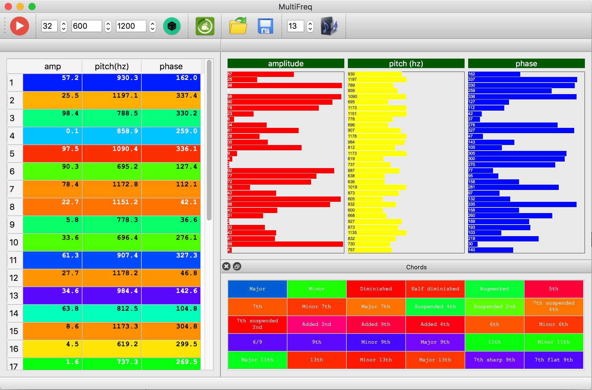

Generates complex waves from amplitude, pitch and phase components
|
Use provided graphics widget to draw the shape of the wave from its basic components or enter directly numerical parameter in the table, generate a random set and finally export to wav file as a loop. Sets can be saved and read for future usage. |

coded w/Qt